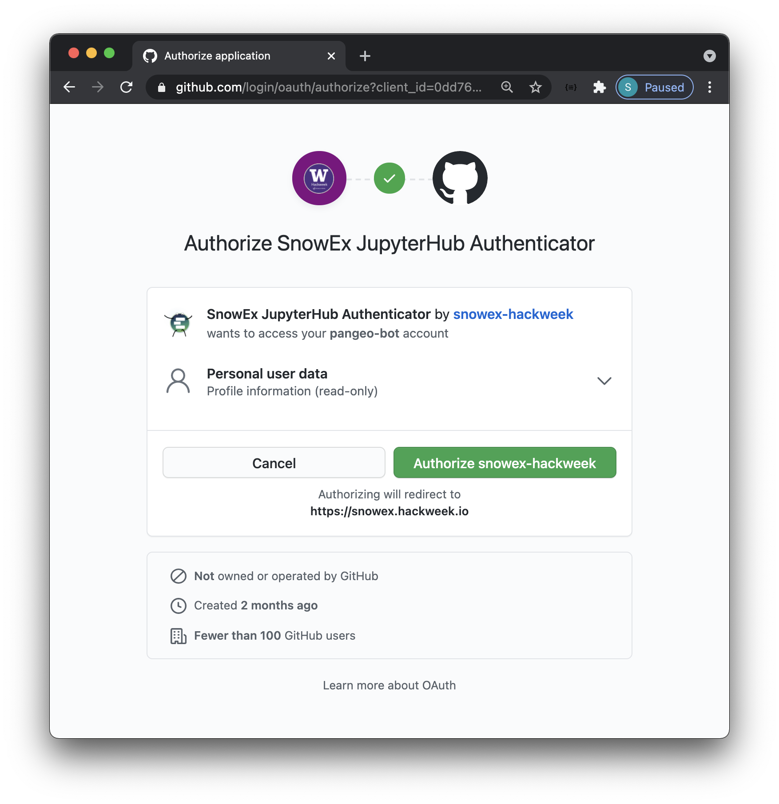
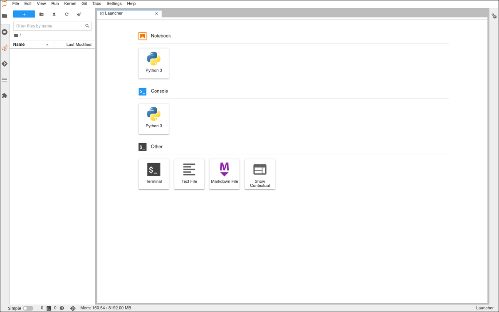

JupyterHub
Contents
JupyterHub#
Why are we using a shared cloud environment?#
We use JupyterHub in an educational setting because it enables us to quickly begin working with code. Each participant connects to a computational environment hosted in the cloud. All that is required is a web browser, and a GitHub username for authentication:

We encourage you to use these shared cloud environments for all the tutorials, and you can optionally use this for your projects as well.
How do I access the shared cloud environment?#
Access to our shared cloud environment (JupyterHub) is under this URL: https://hub.cryointhecloud.com/!
First time login#
The first time you sign in, you will be asked to authorize the OAuth app as access to the JupyterHub is restricted to ICESat-2 Hackweek GitHub Organization members.
Note
The screenshots below will not exactly match what you see and you should see your user information for instance.

After each login#
Attention
It can take several minutes for new servers to launch on the cloud - be patient! Once things are spun up you will see your very own instance of a JupyterLab environment

When you log into JupyterHub you have access to your own virtual drive space
under the /home/jovyan directory. No other users will be able to see or access
your data files. You can add/remove/edit files in your virtual drive space.
How do I end my JupyterHub session?#
Stopping the server happens automatically when you navigate to “File -> Log Out” and click “Log Out”! to end a session. You can also select “File -> Hub Control Panel -> Stop my Server”.

Attention
When you are finished working for the day it is important to explicitly log out of your JupyterHub session.
The reason for this is it will save us a bit of money! When you keep a session active it uses up AWS resources and keeps a series of virtual machines deployed.
Will I lose all of my work?#
Logging out will NOT cause any files under /home/jovyan to be deleted. It
is equivalent to turning off your desktop computer at the end of the day.